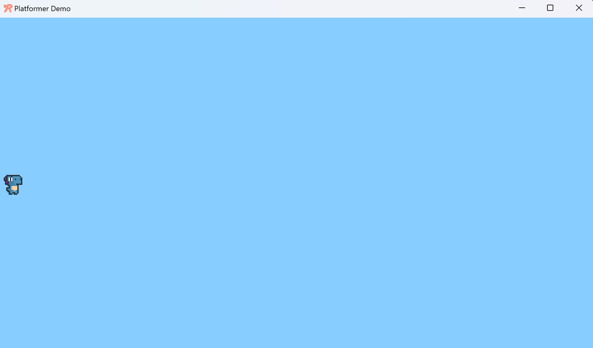

Step 2 - Creating a Player#
Welcome to the second part of making a platformer in rubato. In this step, we will be building a simple animated character.
At this point, you should have a white window with a resolution of 1920 by 1080 pixels.
First, we need to understand the rubato heirarchy (we’ll explain it first, then walk you through it). rubato has 4 levels of structure, in order: Scenes, Groups, Game Objects, and Components.
Scenes hold 2 Groups. One for menu items (the UI) and
one for the main Game Objects. It also manages a Camera.
Scenes are used to separate different sections of a game. For example, you could have each game
level in a different scene. Then to move between levels, you would simply switch scenes, and rubato will
automatically change which scene is updated and drawn to the window.
Groups are the next layer down. They can hold either Game Objects or other Groups.
Their main purpose is divide different “groups” of items (hence the name!). For example,
items in 2 different groups won’t automatically collide with each other, but items sharing a Group will (even if the group is a shared ancestor of both!).
We won’t explicitly use Groups in this tutorial as because their functionality isn’t necessary for the platformer.
Game Objects are the main objects in a game.
They have a position and z-index, and represent a “thing”, such as a player, or an enemy, or a platform. Their behavior is almost entirely
determined by the Components that are assigned to them.
Components are lightweight “modules” that add to the behavior of a Game Object.
For example, an Image component draws an image from your filesystem at the Game Object’s position. A RigidBody
component registers the Game Object into the built-in physics engine. A Hitbox component gives a Game Object shape.
If this explanation was confusing, it’ll hopefully make more sense seeing the system in action.
Let’s create a scene right after rb.init() but before rb.begin().
# Create a scene
main = rb.Scene(background_color=rb.Color.cyan.lighter())
Here we introduce the Color class. Colors
are stored in RGBA format but can be loaded from HSV and HEX. The class comes
preloaded with pastel-inspired default colors as
well as several methods to mix and manipulate them. In the code above, we use lighter()
to lighten the shade a little.
Next, we need to create a player and add it to the scene.
Remember to insert the following code before the begin() call but after creating the scene.
# Create the player and set its starting position
player = rb.GameObject(
pos=rb.Display.center_left + rb.Vector(50, 0),
z_index=1,
)
# Add the player to the scene
main.add(player)
rb.Display.center_left is just the Vector position for the center of the
left side of the screen.
If we ran this now, we won’t see our player because Game Objects don’t draw anything by themselves. Let’s change that by adding a simple Animation to the player.
You will see a few image files inside the files/dino directory. Each of these image
files is a spritesheet for a single animation. Instead of loading each frame and image ourselves, we can use
rb.Spritesheet.from_folder() to load them
all at once. This function takes the path to a folder and returns an
Animation component that can then be added to a GameObject.
Our spritesheets have a couple of frames. Each frame is 24 pixels by 24 pixels. Be sure to specify the sprite size when you load them. This will let rubato correctly subdivide the spritesheet into frames.
Animations are made up of different states which we’ll be able to switch between. When loading from a folder, the state names are the names of the files. Some states we have in our example are idle, jump, crouch, and run.
We also should specify the default state. This is the state that the animation will start at and the one that it will return to when other states finish. In our case, this will be the idle state.
# Create animation and initialize states
p_animation = rb.Spritesheet.from_folder(
rel_path="files/dino",
sprite_size=rb.Vector(24, 24),
default_state="idle",
)
p_animation.scale = rb.Vector(4, 4)
p_animation.fps = 10 # The frames will change 10 times a second
player.add(p_animation) # Add the animation component to the player
Now you should have a cute dinosaur bobbing up and down on the left side of the screen:
{kind=link}
Adorable :)
Here is what you should have so far if you’ve been following along:
import rubato as rb
# initialize a new game
rb.init(
name="Platformer Demo", # Set a name
res=rb.Vector(1920, 1080), # Set the window resolution (pixel length and height).
# note that since we didn't also specify a window size,
# the window will be automatically resized to half of the resolution.
)
# Create a scene
main = rb.Scene(background_color=rb.Color.cyan.lighter())
# Create the player and set its starting position
player = rb.GameObject(
pos=rb.Display.center_left + rb.Vector(50, 0),
z_index=1,
)
# Create animation and initialize states
p_animation = rb.Spritesheet.from_folder(
rel_path="files/dino",
sprite_size=rb.Vector(24, 24),
default_state="idle",
)
p_animation.scale = rb.Vector(4, 4)
p_animation.fps = 10 # The frames will change 10 times a second
player.add(p_animation) # Add the animation component to the player
# Add the player to the scene
main.add(player)
# begin the game
rb.begin()